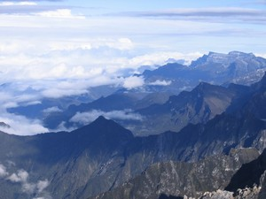

Navigation
- Carstensz Pyramid
- PROGRAMS & SCHEDULE
- Our most imporant expeditions
- LAST CARSTENSZ REFERENCIES
- History of climbing the summit
- Legendary Carstensz climbers
- Seven Summits
- 7 Summits - History
- 7 faces of Carstensz Pyramid
- Photos from climbing
- The nature and flora
- Trekking around Carstensz
Climbing routes to the summit
- 7summits Carstensz best Base camp
- The Tribes and People
- Climate and weather
- Climbing permits
- How to go
- The Highest Mountain of Papua New Guinea
- Why to go with us
- Malaria
- Wrote about us
- References
- Links
- Contact us
- Download

Carstensz Pyramid (Puncak Jaya) – Climbing
.JPG)
Carstensz Pyramid climbing routes Photo©Koleksi Agustaman – Mapala UI
It is still most difficult to get a climbing permit for the Carstensz Pyramid. The other obstacle is the difficulty in getting to the mountain and Base Camp. There are only two options. Either you have to undertake several days long trekking to Carstensz Pyramid (5–7 days) from the most usual starting place – Ilaga, or you can use very expensive helicopter to get to the Zebra Whal Camp. Base Camp lies in the Lake Valley, but some climbers decide to camp directly under the wall in the Yellow Valley. We describe this in greater detail on the How to go page.
Currently there are three climbing routes leading to the top of the Carstensz Pyramid. If you use modern technical equipment one of the routes can be marked as „normal“, and the other two as significantly more difficult. Most climbers who have tried to reach the top of the Carstensz Pyramid take the „normal“ route. There is a rich history to climbing Carstensz.
The Normal Route (Harrer's Route)
The ascent and the descent take roughly 12 – 15 hours. The difficulty is 3 – 4 UIIA. The most difficult section is just below the summit. The wall, which so far sloped under a moderate 10 – 15 degrees, now changes into approximately 80 meters (260 ft) long vertical degree of difficulty 5 – 5+ UIIA. The rock is good, and rarely loose. This wall does not usually pose any problem. This is followed by a progress to the summit on a jagged edge. The climber is faced here with other problems contributing to its difficulty, an approximately ten meters high, smooth overhang wall (difficulty 6 – 7+ UIIA). It can be bypassed, or one can fix a rope to its wall. Less experienced climbers can surmount the wall using jumars, and other difficult sections towards the summit can be also quite well secured. You need long ropes for the way down. A large part of the Carstensz Pyramid must be roped down.
East Ridge
This route offers lies in difficulty in between the Normal Route and the American Direct. You can expect a long ascent. It is mostly scrambling. However, there are some narrower parts, which are more difficult. You have to also beware of loose rocks.
The American Direct
This route leads straight up to the summit. It is a very exposed route. It offers great climbing experience, but it is the most difficult one. The bad news is that the difficulty increases as you get closer to the summit – the worst part is the steep Carstensz headwall.
Carstensz Pyramid (Puncak Jaya) – Summit

Carstensz Pyramid view -NW Photo©JahodaPetr.com
If you are lucky with the weather, sometimes from the summit of the Carstensz Pyramid, one can even see the sea. Unfortunately we haven't been so lucky yet to see the sea from the summit. We've only looked into the golden mine, into the Grasberg crater, at the Nga Pulu iceberg, and the neighboring summits and rain forest. On the top of the Carstensz Pyramid, we have experienced sun, rain, and snow. No wonder, it is only 4 degrees from the equator. Although some 15 to 30 centimeters of fresh snow in the height lower than 5000 meters (16400 ft) only several degrees far from the equator is not exactly a usual thing.
Visit our dedicated page with more photos from Carstensz climbing.